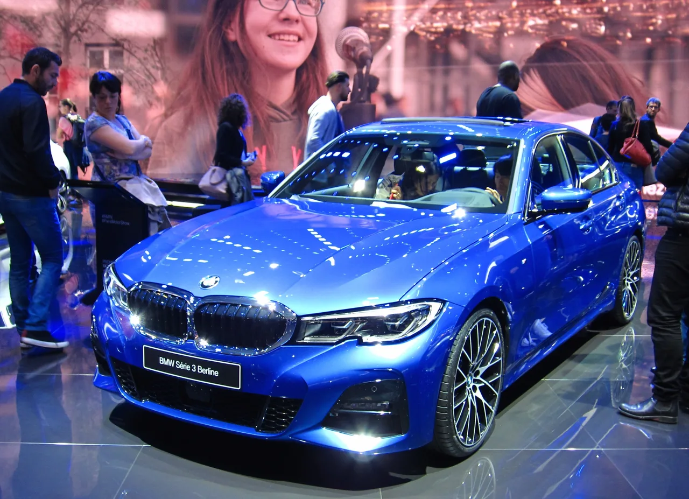

▲ BMW M340i xDrive. 3시리즈 라인업 중 상급 트림으로, 3시리즈 전반의 중고 시세 하락 흐름에서 자유롭지 않다
2023년식 BMW 330i 세단의 미국 중고 시장 평균가가 3만880달러까지 떨어졌습니다. xDrive 사륜구동 버전은 3만2,630달러, 상급 트림인 M340i는 3만5,356달러, M340i xDrive는 3만5,594달러 수준입니다. 신차 가격과 비교하면 상당한 낙폭입니다.
1. 30~37%, 3년 만의 낙폭
정확한 하락폭을 보면 상황이 뚜렷해집니다. 330i는 초기 신차 가격 4만3,800달러에서 현재 평균 3만880달러로, 약 29.5% 하락했습니다. 상급 트림인 M340i xDrive는 낙폭이 더 큽니다. 초기 5만6,850달러에서 현재 3만5,594달러로, 약 37.4%나 떨어졌습니다. 고성능 트림일수록 오히려 감가율이 크다는 점이 눈에 띕니다. 통상 고성능 버전이 희소성 덕에 가격 방어가 잘 되는 것과는 반대 흐름입니다.
| 트림 | 신차가 | 현재 평균가 | 하락률 |
|---|---|---|---|
| 330i 세단 | 4만3,800달러 | 3만880달러 | 약 29.5% |
| 330i xDrive 세단 | - | 3만2,630달러 | - |
| M340i 세단 | - | 3만5,356달러 | - |
| M340i xDrive 세단 | 5만6,850달러 | 3만5,594달러 | 약 37.4% |

▲ BMW 3시리즈(G20). 330i의 기반이 되는 세대로, 신차 시절의 인기와 달리 3년 뒤 중고 시장에서는 재고 적체에 시달리고 있다

▲ BMW 3시리즈의 실내. 프리미엄 마감에도 불구하고 높은 유지비와 정비 비용이 중고 수요를 끌어내리는 요인으로 꼽힌다
2. 50일 넘게 안 팔리는 이유
중고 럭셔리 차량이 팔리기까지 평균 50일 넘게 걸린다는 점은, 단순한 가격 문제를 넘어선 구조적 수요 부진을 보여줍니다(전체 중고차 평균은 약 47일). 원인으로는 크게 세 가지가 꼽힙니다. 첫째는 유럽 럭셔리 브랜드 특유의 빠른 감가상각입니다. 실제로 5년 보유 시 감가상각률은 BMW가 50%, 벤츠가 46%, 아우디가 48%에 달해, 일반 대중 브랜드보다 훨씬 가파릅니다. 둘째는 연간 약 6,584달러(월 549달러)에 달하는 높은 소유 비용입니다. 세부적으로는 연료비 2,600달러, 정비비 773달러, 완전 보장 보험료 3,211달러로 구성됩니다. 셋째는 딜러들이 재고를 과도하게 쌓아둔 상태라는 점입니다. 공급이 수요를 초과하면서 가격 하락 압력이 계속되는 구조입니다.

▲ 중고차 딜러 전시장. 럭셔리 브랜드 재고는 평균 50일 넘게 팔리지 않고 쌓여 있어, 딜러들의 가격 인하 압박으로 이어지고 있다
3. 소비자에게는 기회일 수도
판매자 입장에서는 악재지만, 구매자 입장에서는 다른 이야기가 됩니다. 3년 된 BMW 3시리즈를 신차 가격의 60~70% 수준에 구할 수 있다는 뜻이기 때문입니다. 특히 M340i xDrive처럼 감가율이 큰 고성능 트림일수록, 상대적으로 저렴한 가격에 고성능 세단을 손에 넣을 기회가 될 수 있습니다. 다만 구매 전에는 반드시 연간 유지비(약 6,584달러 수준)까지 감안한 총소유비용을 따져봐야 합니다. 싸게 사는 것과 싸게 유지하는 것은 별개의 문제이기 때문입니다.
4. 정리 — 프리미엄 브랜드의 딜레마
BMW 330i의 사례는 유럽 프리미엄 브랜드가 공통으로 안고 있는 딜레마를 보여줍니다. 신차 판매 시점에는 브랜드 프리미엄으로 높은 가격을 받지만, 시간이 지나면 그 프리미엄이 오히려 빠른 감가상각과 높은 유지비 부담으로 돌아와 중고 시장에서의 매력을 떨어뜨립니다. 딜러들의 재고 부담이 계속되면 프로모션이나 추가 할인으로 이어질 가능성도 있어, 지금이 오히려 BMW 3시리즈 중고 구매를 고려해볼 타이밍일 수 있습니다.